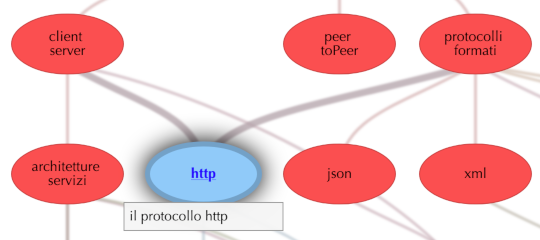

L'indice principale di questo libro si presenta come un insieme di pallini (nodi) collegati tra loro. Due cose non sono casuali: i collegamenti e i colori.
Collegamenti
 Prendiamo l'immagine qui a destra come esempio. Facendo click su un nodo (http nell'esempio) questo viene evidenziato e si evidenziano anche i collegamenti: in questo caso per poter leggere il capitolo "http" è prima necessario aver compreso i capitoli "client server" e "protocolli formati" che sono collegati da una riga più spessa.
Colori
I nodi sono colorati per dividerli in gruppi tematici.
questi nodi non trattano argomenti particolari.
Nozioni di base
Il protocollo http
Programmazione client/server con Java
Comunicazione lato client con javascript
Applicazioni lato server, servizi in particolare
Creare servizi con SpringBoot
In caso siano presenti nodi che sembrano più sbiaditi sono così perché sono ancora in fase di scrittura.
Cerca
Nella parte alta del libro c'è una casella di ricerca: basta inserire un termine e fare click su "cerca" appariranno delle frecce rosse sopra ai capitoli che contengono il termine ricercato.
Changelog
Un nodo particolare si chiama "changelog": è utile ad esempio per chi preferisce stampare o scaricare il libro. Riporta l'oggetto e le date di modifica delle diverse pagine in base a questo si può capire se la propria copia è aggiornata o meno e se conviene aggiornarla.